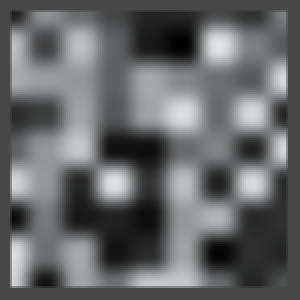
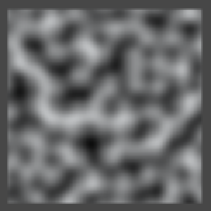
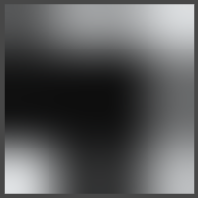
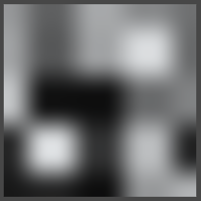
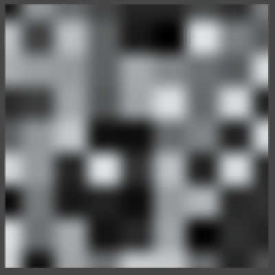

Simplex Noise, keeping it simple
- Use a falloff function based on distance;
- Convert between a square and a triangular grid;
- Convert between a cube and a tetrahedron grid;
- Compute Simplex Value noise, up to 3D, with derivatives;
- Compute Simplex Gradient noise, up to 3D, with derivatives.
This tutorial follows the Noise and Noise Derivatives tutorials. I assume you did those first, as we'll be using code and knowledge gained from them.
This tutorial has been made with Unity 4.5.2. It might not work for older versions.
Simplifying Noise
In the Noise and Noise Derivatives tutorial we used pseudorandom noise to color a texture, deform a flat surface, and animate particles flows. We created two forms of lattice noise, interpolating between intersection points of grid lines. We chose to use a hypercube grid – a line grid in 1D, a square grid in 2D, and a cube grid in 3D – because it's an obvious and easy way to partition space.
We created Value noise by defining hash values for each lattice point and smoothly interpolating between them. We created Gradient noise by interpolating gradients instead of fixed values, which is most often known as Perlin noise.
You can produce very nice effects with these noise types, but they have some limitations. As they're based on a hypercube grid, you will be able to detect square patterns if you look hard enough. Also, when moving an axis-aligned 2D slice through 3D noise you will see a distinct change in the noise as you alternate between edges and centers of cube cells. Due to the triple interpolation, a cube's center is a lot more fuzzy than its faces. Finally, analytical derivatives are hard to compute and higher dimensions get more expensive quickly. 4D noise requires a tesseract grid, which means you'd have to interpolate 16 points per sample.
Using a Simplex Grid
We do not need to use a hypercube grid, all we need is a way to partition space into regular chunks. Ideally, we'd use the smallest possible shape for our grid cells, which would be a simplex. For 1D this is a line, so it makes no difference. For 2D it is a triangle instead of a square. For 3D it is a tetrahedron instead of a cube. And for 4D it is a pentatope instead of a tesseract. This means that for n dimension we only have consider 1 + n points, instead of 2n.
Falloff instead of Interpolation
How would we interpolate between the corners of a simplex? Actually, we don't need to. Instead of interpolating, we can decrease the contribution of a corner based on its distance from the sample point. For 2D, this would be a radial falloff function, which should drop to zero when it reaches the opposide side of the triangle. For 3D it would be a spherical falloff, and so on.
A big advantage of using a falloff instead of an interpolation is that the contribution of each point is now indepedent. They're just added together to get the final value. This simplifies the calculation of the derivatives a great deal.
You could use this approach with a hypercube grid as well, but the radial falloff doesn't work as well with squares as it does with triangles.
 
Simplex Noise
Using a simplex grid with a falloff function to compute gradient noise was first proposed by Ken Perlin as an alternative for the gradient noise that he previously invented. Most people refer to this as simplex noise, so let's stick with the same name for our simplex-based gradient noise. For our Value noise alternative, let's name it Simplex Value to distinquish it from the hypercube-based Value noise.
We'll be building on top of the previous tutorial, so start with the finished project of the Noise Derivatives tutorial.
Simplex Value Noise
Let's again start with Value noise, as it is simpler than Gradient noise. However, before we start remember that we've so far treated Value noise as a special case. This is because it has a range of 0–1 while Gradient noise has a range of -1–1. So we should update our code to also make that exception for Simplex Value noise. Alternatively, we could do away with the special case entirely if we change the range of our Value noise to -1–1. Let's do that, just because we can.
First, adjust the result of the Value1D, Value2D, and Value3D methods in Noise. Simply double it and subtract one.
return sample * (2f / hashMask) - 1f;
Then remove the checks for Value noise from TextureCreator, SurfaceCreator, and SurfaceFlow. After taking a noise sample we now always half it.
NoiseSample sample = …; sample = sample * 0.5f;
And to keep TextureCreator in the 0–1 range, add ½.
sample = sample * 0.5f + 0.5f;
With that out of the way, add our new noise type to the enumeration at the top of the Noise script.
public enum NoiseMethodType {
Value,
Perlin,
SimplexValue
}
Now we can add placeholder methods and their method array, and include it in the methods collection. This allows use to select Simplex Value noise in the inspectors of our creators.
public static NoiseMethod[] simplexValueMethods = {
SimplexValue1D,
SimplexValue2D,
SimplexValue3D
};
public static NoiseMethod[][] methods = {
valueMethods,
perlinMethods,
simplexValueMethods
};
public static NoiseSample SimplexValue1D (Vector3 point, float frequency) {
return new NoiseSample();
}
public static NoiseSample SimplexValue2D (Vector3 point, float frequency) {
return new NoiseSample();
}
public static NoiseSample SimplexValue3D (Vector3 point, float frequency) {
return new NoiseSample();
}
1D
We start considering just one dimension, which keeps it simple. The simplex and hypercube grid are equal in this case, so we can just grab the integer portion of the sample point to get the lattice point to its left.
public static NoiseSample SimplexValue1D (Vector3 point, float frequency) {
point *= frequency;
int ix = Mathf.FloorToInt(point.x);
return new NoiseSample();
}
Let's focus on the contribution of the left end of the line segment we're in. It should start at one and drop to zero when we reach the right end, just like with regular Value noise. And once again we want to make sure that the first and second derivative of that falloff function drops to zero as well. What's different is that the derivatives don't need to be zero at the start, they just need to be continuous.
Besides those considerations, we want a function that would work in any dimension, based on the distance to the grid intersection. While we could compute the actual distance, this would require performing a square root operation for higher dimensions, and we rather avoid doing that. So could we work with the squared distance instead? If so, we automatically get a radially symmetrical falloff.
The simplest such falloff would be 1 - x2. Its first and second derivatives are -2x and -2, which aren't zero when x is one, so it won't work. What about if we squared the whole function? Then we get (1 - x2)2, which still drops to zero when it should. Its derivatives are -4x(1 - x2), which does drop to zero, and -4(1 - x2) + 8x2, which doesn't. So let's go one step further and try the cubic version, (1 - x2)3. That one has derivatives -6x(1 - x2)2 and -6(1 - x2)2 + 24x2(1 - x2), which both drop to zero when we want them to.
So (1 - x2)3 is our falloff function. Let's compute it step by step and visualize it. Also don't forget that we have to convert the final result to the -1–1 range.
public static NoiseSample SimplexValue1D (Vector3 point, float frequency) {
point *= frequency;
int ix = Mathf.FloorToInt(point.x);
float x = point.x - ix;
float f = 1f - x * x;
float f2 = f * f;
float f3 = f * f2;
NoiseSample sample = new NoiseSample();
sample.value = f3;
return sample * 2f - 1f;
}
Now the idea is that we can compute this for both end points separately and simply sum the results. So let's put the code to compute one part of the result in a separate method and call it twice so we get both ends.
private static NoiseSample SimplexValue1DPart (Vector3 point, int ix) {
float x = point.x - ix;
float f = 1f - x * x;
float f2 = f * f;
float f3 = f * f2;
NoiseSample sample = new NoiseSample();
sample.value = f3;
return sample;
}
public static NoiseSample SimplexValue1D (Vector3 point, float frequency) {
point *= frequency;
int ix = Mathf.FloorToInt(point.x);
NoiseSample sample = SimplexValue1DPart(point, ix);
sample += SimplexValue1DPart(point, ix + 1);
return sample * 2f - 1f;
}
As you can see, the result is at full strength at the end points of the line segments and weakest halfway between them. This difference becomes more pronounced in higher dimensions.
All that's left to turn it into Value noise is factoring in the hash values.
private static NoiseSample SimplexValue1DPart (Vector3 point, int ix) {
float x = point.x - ix;
float f = 1f - x * x;
float f2 = f * f;
float f3 = f * f2;
float h = hash[ix & hashMask];
NoiseSample sample = new NoiseSample();
sample.value = h * f3;
return sample;
}
public static NoiseSample SimplexValue1D (Vector3 point, float frequency) {
point *= frequency;
int ix = Mathf.FloorToInt(point.x);
NoiseSample sample = SimplexValue1DPart(point, ix);
sample += SimplexValue1DPart(point, ix + 1);
return sample * (2f / hashMask) - 1f;
}
The end result looks very much like regular interpolated Value noise, though the falloff function produces more bands.
Of course we still have to include the derivate computation, but we leave that for later.
2D
For two-dimension noise, we again begin with visualizing the falloff. Building on our 1D apprach, let's just include y the exact same way that we use x.
private static NoiseSample SimplexValue2DPart (Vector3 point, int ix, int iy) {
float x = point.x - ix;
float y = point.y - iy;
float f = 1f - x * x - y * y;
float f2 = f * f;
float f3 = f * f2;
NoiseSample sample = new NoiseSample();
sample.value = f3;
return sample;
}
public static NoiseSample SimplexValue2D (Vector3 point, float frequency) {
point *= frequency;
int ix = Mathf.FloorToInt(point.x);
int iy = Mathf.FloorToInt(point.y);
NoiseSample sample = SimplexValue2DPart(point, ix, iy);
sample += SimplexValue2DPart(point, ix + 1, iy + 1);
return sample * 2f - 1f;
}
We now see the radial falloff of two corners per square, along the main diagonal. However, those corners themselves aren't white. This is because the falloff function from the other corner is negative at that point, which is something that couldn't happen in 1D. We don't want negative contributions, so only include them when they are larger than zero.
private static NoiseSample SimplexValue2DPart (Vector3 point, int ix, int iy) {
float x = point.x - ix;
float y = point.y - iy;
float f = 1f - x * x - y * y;
NoiseSample sample = new NoiseSample();
if (f > 0f) {
float f2 = f * f;
float f3 = f * f2;
sample.value = f3;
}
return sample;
}
Of course we don't want squares, we want triangles. So how do we determine which triangle contains a sample point, and how do we locate the corners of that triangle? We know that 2D space can be tiled with equilateral triangles. We also know that 2D space can be tiled with squares, which we've already used a lot. It would be convenient if we could convert between the two tilings.
If you split a square along its diagonal, you end up with two triangles. These are both right and isosceles triangles. If you were to compress those triangles along the same diagonal, at some point they'll become equilateral. So if we skew a square grid by the right amount and split the squares, we end up with an equilateral triangular grid.
Scaling along the main diagonal means that we need to figure out where along that line each point lies. For any point <x, y> this is equal to x + y. The downscaling itself can be done by subtracting s(x + y) from both components of the point. We have to choose the scaling factor s such that we end up with equilateral triangles.
Let's consider the triangle defined by A = <0, 0>, B = <1, 0>, and C = <1, 1>. Point A won't change, but the other two will be transformed into B = <1 - s, -s> and C = <1 - 2s, 1 - 2s>. To get an equilateral triangle, the length of all three sides of the triangle have to be equal.
For the unscaled triangle the distance from A to B – or simply |AB| – is 1. The distance |BC| between B and C is the same as |B|, so we can ignore that one. The distance from A to C – or simply |AC| – is √2. For the transformed triangle these lenghts are yet unknown.
We have to find a value for s such that after scaling |AB| = |AC|. Alternatively, we can equate the squared lengths |AB|2 = |AC|2, which means we don't have to work with square roots. The squared length of a point <x, y> is simply x2 + y2.
We have |AB|2 = (1 - s)2 + (-s)2 = 2s2 - 2s + 1.
We also have |AC|2 = 2(1 - 2s)2 = 8s2 - 8s + 2.
Equating those rewrites to 6s2 - 6s + 1 = 0. Using the quadratic formula, we end up with the two solutions s = (3 ± √3) / 6. That we get two solutions makes sense, because you can create both a positive and a negative equilateral triangle. To stay positive we simple choose the smallest solution, which is (3 - √3) / 6.
private static float squaresToTriangles = (3f - Mathf.Sqrt(3f)) / 6f;
But how do we convert the other way, from the triangles to the squares? For that, consider the transformed point C. It has to go from <x + 2sx, y + 2sy> back to <1, 1>, for some new s that we have to find.
We have x + 2sx = 1, which means that s = 1 / 2x - ½. We also know that x = 1 - 2((3 - √3) / 6), which equals √3 / 3 or 1 / √3. Substituting that in, we get s = 1 / (2 / √3) - ½ = (√3 - 1) / 2.
Now we finally have both our conversion factors.
private static float trianglesToSquares = (Mathf.Sqrt(3f) - 1f) / 2f;
So to easily figure out which pair of triangles we're in, we first skew the grid so it becomes square. The we determine the lattice points, which we feed into the part method.
public static NoiseSample SimplexValue2D (Vector3 point, float frequency) {
point *= frequency;
float skew = (point.x + point.y) * trianglesToSquares;
float sx = point.x + skew;
float sy = point.y + skew;
int ix = Mathf.FloorToInt(sx);
int iy = Mathf.FloorToInt(sy);
NoiseSample sample = SimplexValue2DPart(point, ix, iy);
sample += SimplexValue2DPart(point, ix + 1, iy + 1);
return sample * 2f - 1f;
}
To get the actual corner points for determining their distance, we have to unskew them.
private static NoiseSample SimplexValue2DPart (Vector3 point, int ix, int iy) {
float unskew = (ix + iy) * squaresToTriangles;
float x = point.x - ix + unskew;
float y = point.y - iy + unskew;
float f = 1f - x * x - y * y;
NoiseSample sample = new NoiseSample();
if (f > 0f) {
float f2 = f * f;
float f3 = f * f2;
sample.value = f3;
}
return sample;
}
We now see rhombuses formed by two equilateral triangles instead of squares. We also see that the falloff isn't quick enough. It currently reaches zero at a distance of one, while it should do so at a distance equal to the height of our triangle.
The height of an equilateral triangle is equal to its edge length multiplied by √3 / 2. So we must determine the length of its edges. We already know that |AB|2 = 2s2 - 2s + 1 with s = (3 - √3) / 6, which leads to |AB|2 = ⅔. That's the square length, so the actual edge length is √⅔ or √6 / 3. This means that the triangle height is √½ or √2 / 2.
So our falloff function should reach zero when the squared distance reaches ½. That means we should use ½ - x2 - y2 as our basis, instead of 1 - x2 - y2.
float f = 0.5f - x * x - y * y;
Of course this also means that the falloff now starts at ½3 = ⅛, so we have to scale up the end result to compensate.
return sample * (8f * 2f) - 1f;
The next step is determining which of the two triangles we're in, either the bottom or the top one. This is easy to do inside the rectangular grid. If the fraction of our X coordinate is larger than or equal to the fraction of the Y coordinate, then we're in the bottom triangle. This triangle has the relative corner coordinates <0, 0>, <1, 0>, and <1, 1>. The other triangles sits above it and has the corner coordinates <0, 0>, <0, 1>, and <1, 1>. As we already included the corners along the main diagonal, we only need to add the one that's still missing.
NoiseSample sample = SimplexValue2DPart(point, ix, iy);
sample += SimplexValue2DPart(point, ix + 1, iy + 1);
if (sx - ix >= sy - iy) {
sample += SimplexValue2DPart(point, ix + 1, iy);
}
else {
sample += SimplexValue2DPart(point, ix, iy + 1);
}
To turn it into real Value noise, we have to factor the hash values into the result.
float h = hash[hash[ix & hashMask] + iy & hashMask]; sample.value = h * f3;
And the final step is to readjust the scale.
return sample * (8f * 2f / hashMask) - 1f;
  
As you can see, 2D Simplex Value noise looks like spheres placed in a triangular or honeycomb grid. It shows the same hash pattern as 2D Value noise does, but skewed along the main diagonal.
3D
We can apply the same approach we used for 2D to work out the grid for three dimensions, but in this case we're working with cubes and tetrahedra. However, it is not possible to tile 3D space with regular tetrahedra. We have to make do with skewed tetrahedra, which means that not all edges will have the same length.
A cube can be split into six tetrahedra just like a square can be split into two triangles. Each tetrahedron has one edge along the main diagonal of the cube, from <0, 0, 0> to <1, 1, 1>. How many ways can you walk between those two points, if you must follow three edges of the cube? Six ways, each defining three more edges of a tetrahedron. Besides that, each tetrahedron has two edges along diagonals of adjacent cube faces.
So we start with three different edge lengths. Let's consider the tetrahedron that is defined by the four points A = <0, 0, 0>, B = <1, 0, 0>, C = <1, 0, 1>, and D = <1, 1, 1>. Applying a yet unknown scale factor, we end up with three transformed points.
B = <1 - s, -s, -s> with |AB|2 = 3s2 - 2s + 1.
C = <1 - 2s, -2s, 1 - 2s> with |AC|2 = 12s2 - 8s + 2.
D = <1 - 3s, 1 - 3s, 1 - 3s> with |AD|2 = 27s2 - 18s + 3.
Let's try out |AB|2 = |AC|2. This leads to 9s2 - 6s + 1 = 0 and s = ⅓. What square lenghts do we end up with? |AB|2 = |AC|2 = ⅔, and |AD|2 = 0. This doesn't work, we've collapsed the tetrahedron into a triangle.
So let's try |AB|2 = |AD|2 instead. This leads to 14s2 - 16s + 2 = 0 and s = ⅙. This gives us square lenghts |AB|2 = |AD|2 = ¾, and |AC|2 = 1. This could work, and making the shortest and longest edges equal matches what we did in 2D as well.
The last option is to try |AC|2 = |AD|2. This leads to 15s2 - 10s + 1 = 0 and s = (5 - √10) / 15. That results in |AB|2 = ⅘, and = |AC|2 = |AD|2 = 1 + ⅕. This also works, although the difference between edge lengths is larger.
So let's use a scale factor of ⅙ to go from cubes to tetrahedra. These tetrahedra are composed of four isosceles triangles. Each triangle has one long side with length 1 and two short sides with length √¾ or √3 / 2.
To scale in the other direction, consider one component of the transformed point D. This time we have x + 3sx = 1, with x = 1 - 3(⅙) = ½. So s = ⅓.
Let's just copy the 2D code, remove the triangle check, add the third dimension, substitude our new scale factors, and see what happens.
private static NoiseSample SimplexValue3DPart (Vector3 point, int ix, int iy, int iz) {
float unskew = (ix + iy + iz) * (1f / 6f);
float x = point.x - ix + unskew;
float y = point.y - iy + unskew;
float z = point.z - iz + unskew;
float f = 0.5f - x * x - y * y - z * z;
NoiseSample sample = new NoiseSample();
if (f > 0f) {
float f2 = f * f;
float f3 = f * f2;
sample.value = f3;
}
return sample;
}
public static NoiseSample SimplexValue3D (Vector3 point, float frequency) {
point *= frequency;
float skew = (point.x + point.y + point.z) * (1f / 3f);
float sx = point.x + skew;
float sy = point.y + skew;
float sz = point.z + skew;
int ix = Mathf.FloorToInt(sx);
int iy = Mathf.FloorToInt(sy);
int iz = Mathf.FloorToInt(sz);
NoiseSample sample = SimplexValue3DPart(point, ix, iy, iz);
sample += SimplexValue3DPart(point, ix + 1, iy + 1, iz + 1);
return sample * (8f * 2f) - 1f;
}
The falloff looks pretty good. Inspecting the geometry of the face triangles reveals that the height of our tetrahedron is √½. Because this is the same as for our 2D case, we do not need to adjust the falloff base. It also happens to be equal to the height of a regular tetrahedron with edge length √¾.
Now we need to determine which tetrahedron we're in. This works the same as for 2D, but now we have to compare three components instead of two. So let's start with figuring out the closest corner on the main axes.
float x = sx - ix;
float y = sy - iy;
float z = sz - iz;
if (x >= y) {
if (x >= z) {
sample += SimplexValue3DPart(point, ix + 1, iy, iz);
}
else {
sample += SimplexValue3DPart(point, ix, iy, iz + 1);
}
}
else {
if (y >= z) {
sample += SimplexValue3DPart(point, ix, iy + 1, iz);
}
else {
sample += SimplexValue3DPart(point, ix, iy, iz + 1);
}
}
To get the fourth and last corner, we have to repeat this process and add the second-closest corner.
if (x >= y) {
if (x >= z) {
sample += SimplexValue3DPart(point, ix + 1, iy, iz);
if (y >= z) {
sample += SimplexValue3DPart(point, ix + 1, iy + 1, iz);
}
else {
sample += SimplexValue3DPart(point, ix + 1, iy, iz + 1);
}
}
else {
sample += SimplexValue3DPart(point, ix, iy, iz + 1);
sample += SimplexValue3DPart(point, ix + 1, iy, iz + 1);
}
}
else {
if (y >= z) {
sample += SimplexValue3DPart(point, ix, iy + 1, iz);
if (x >= z) {
sample += SimplexValue3DPart(point, ix + 1, iy + 1, iz);
}
else {
sample += SimplexValue3DPart(point, ix, iy + 1, iz + 1);
}
}
else {
sample += SimplexValue3DPart(point, ix, iy, iz + 1);
sample += SimplexValue3DPart(point, ix, iy + 1, iz + 1);
}
}
We once again get a triangular grid, but it doesn't look the same as the 2D grid. This is because the tetrahedra aren't aligned with any of the three main axes. They follow the main diagonal, so you're seeing a slanted slice through tetrahedra when sampling in an axis-aligned plane, which causes an obvious diagonal undulation.
So how does it look with hash values?
float h = hash[hash[hash[ix & hashMask] + iy & hashMask] + iz & hashMask]; sample.value = h * f3;
Don't forget to readjust the scale of the result.
return sample * (8f * 2f / hashMask) - 1f;
Unlike regular Value noise, this pattern doesn't really change appearance when moving along Z. The circles slide along the diagonal, but it doesn't alternate between fuzzy and sharp results as it passes lattice boundaries. Actually, this does happen, just not all at once. Instead, you get the sharp and fuzzy bands along the diagonal. It's like hypercube-based Value noise that's rotated around X and Y.
Derivatives
So what about the derivatives? Fortunately, they are quite simple. The derivative of the falloff function (1 - x2)3 is -6x(1 - x2)2. Factor the hash value into this, and you have the 1D derivative.
NoiseSample sample = new NoiseSample(); sample.value = h * f3; sample.derivative.x = -6f * h * x * f2; return sample;
Of course we still need to adjust for the frequency, so do this right before returning the final result. In fact, do this for 2D and 3D right now as well so we won't forget.
sample.derivative *= frequency;
For two dimensions, we can use the exact same approach. The only difference between the derivative components is which component to multiply with. As the rest of the formula is the same, we might as well compute it only once.
float h = hash[hash[ix & hashMask] + iy & hashMask]; float h6f2 = -6f * h * f2; sample.value = h * f3; sample.derivative.x = h6f2 * x; sample.derivative.y = h6f2 * y;
It's just as easy for three dimensions.
float h = hash[hash[hash[ix & hashMask] + iy & hashMask] + iz & hashMask]; float h6f2 = -6f * h * f2; sample.value = h * f3; sample.derivative.x = h6f2 * x; sample.derivative.y = h6f2 * y; sample.derivative.z = h6f2 * z;
Gradient Noise
It's time to tackle Gradient Simplex noise, which we'll just name Simplex noise. So we add a new noise type.
public enum NoiseMethodType {
Value,
Perlin,
SimplexValue,
Simplex
}
And of course we adjust the method arrays.
public static NoiseMethod[] simplexMethods = {
Simplex1D,
Simplex2D,
Simplex3D
};
public static NoiseMethod[][] methods = {
valueMethods,
perlinMethods,
simplexValueMethods,
simplexMethods
};
Now copy and rename the Simplex Value methods. Make sure you have them call their own part methods. I've only shown the changes for the 1D case.
private static NoiseSample Simplex1DPart (Vector3 point, int ix) {
float x = point.x - ix;
float f = 1f - x * x;
float f2 = f * f;
float f3 = f * f2;
float h = hash[ix & hashMask];
NoiseSample sample = new NoiseSample();
sample.value = h * f3;
sample.derivative.x = -6f * h * x * f2;
return sample;
}
public static NoiseSample Simplex1D (Vector3 point, float frequency) {
point *= frequency;
int ix = Mathf.FloorToInt(point.x);
NoiseSample sample = Simplex1DPart(point, ix);
sample += Simplex1DPart(point, ix + 1);
sample.derivative *= frequency;
return sample * (2f / hashMask) - 1f;
}
1D
Continuing with 1D, we now have to retrieve a 1D gradient instead of just the hash value. As with Perlin noise, we compute the gradient value by taking the dot product of the gradient vector and the vector from the corner to our sample point. For 1D this is a simple multiplication.
Once again just as with Perlin noise, the gradient now has to include the falloff multiplied by the gradient vector.
float g = gradients1D[hash[ix & hashMask] & gradientsMask1D]; float v = g * x; NoiseSample sample = new NoiseSample(); sample.value = v * f3; sample.derivative.x = g * f3 - 6f * v * x * f2; return sample;
Now we have to determine the maximum value of the noise. Like Perlin noise, the maximum value is reached halfway along the line segment when the gradients on both ends are pointing towards each other. This means that the maximum is 2x(1 - x2)3 where x = ½, which is 27 / 64. So we have to divide the final result by this value, which means multiplying by 64 / 27.
return sample * (64f / 27f);
2D
It goes the same for 2D. Get the gradient vector, compute the dot product, include them in the value and the partial derivatives.
Vector2 g = gradients2D[hash[hash[ix & hashMask] + iy & hashMask] & gradientsMask2D]; float v = Dot(g, x, y); float v6f2 = -6f * v * f2; sample.value = v * f3; sample.derivative.x = g.x * f3 + v6f2 * x; sample.derivative.y = g.y * f3 + v6f2 * y;
The question is now where the maximum lies. Along the edge of a triangle, or at its center? Let's compute them both.
Remember that the edge length is √⅔ or √6 / 3. So halfway along an edge we get 2x(½ - x2)3 where x = √6 / 6, which is √6 / 81.
Next, the distance from a corner to the center of an equilateral triangle is equal to its edge length multiplied by √3 / 3 or √⅓. So at the center we get 3x(½ - x2)3 where x = √2 / 3, which gives us 125√2 / 5832. As this value is a tiny bit larger than the other one, it is our theoretical maximum. Its multiplicative inverse can be written as 2916√2 / 125, so that's our final scale.
private static float simplexScale2D = 2916f * sqr2 / 125f;
Now we just need to factor it in at the end, and we're done.
return sample * simplexScale2D;
An additional question is whether we actually cover the entire -1–1 range, because we didn't consider that we're only using eight gradient vectors. It turns out that our eight 45-degree rotated gradient vectors produce maximum values that can get very close to -1 and 1. So yes, we're effectively covering the entire range.
3D
The changes required for 3D Simplex noise should hold no surpises.
Vector3 g = gradients3D[hash[hash[hash[ix & hashMask] + iy & hashMask] + iz & hashMask] & gradientsMask3D]; float v = Dot(g, x, y, z); float v6f2 = -6f * v * f2; sample.value = v * f3; sample.derivative.x = g.x * f3 + v6f2 * x; sample.derivative.y = g.y * f3 + v6f2 * y; sample.derivative.z = g.z * f3 + v6f2 * z;
To get the maximum, it makes sense to look at the middle of short edges of our skewed tetrahedron. We obviously won't find the maximum on the longer edge. In case of a regular triangle, the difference between the middle and halfway across an edge was extremely small. Turning it into a right triangle only increases the distance between two corners, so the face middle is also out. The distance to the tetrahedron's center is even larger, so we can ignore it too.
As the shortest edge length is √3 / 2, we get 2x(½ - x2)3 where x = √3 / 4, which ends up being 125√3 / 8192. The reciprocal of that can be written as 8192√3 / 375, so that is our scale factor.
Actually, because our 3D gradient array contains vectors of length √2 we have to compensate by factoring this into our denominator.
private static float simplexScale3D = 8192f * Mathf.Sqrt(3f) / (sqr2 * 375f);
After multiplying our final result with that, we can check out the noise.
return sample * simplexScale3D;
It looks nice, but it turns out that our current set of gradient vectors doesn't fill the entire range. The maximum amplitude appears to be roughly 0.85 instead of 1. How could we fix this?
We know that all tetrahedrons have one of their shortest edges aligned with the main diagonal. So if we include two opposite vectors along the main diagonal, we can cover the entire -1–1 range.
The gradient array we're currently using was designed by Ken Perlin. It contains vectors pointing to the middle of the twelve edges of a cube. Four of these are duplicated to increase the array size to 16.
To include the main diagonal, we have to add vectors pointing to two corners of the cube. To maintain symmetry, we should add all eight corner vectors. Twelve edges plus eight corners gives us twenty vectors, which isn't a power of two. However, if we include the edges twice, we end up with 32 vectors. To keep them all the same length, we have to normalize them.
private static Vector3[] simplexGradients3D = {
new Vector3( 1f, 1f, 0f).normalized,
new Vector3(-1f, 1f, 0f).normalized,
new Vector3( 1f,-1f, 0f).normalized,
new Vector3(-1f,-1f, 0f).normalized,
new Vector3( 1f, 0f, 1f).normalized,
new Vector3(-1f, 0f, 1f).normalized,
new Vector3( 1f, 0f,-1f).normalized,
new Vector3(-1f, 0f,-1f).normalized,
new Vector3( 0f, 1f, 1f).normalized,
new Vector3( 0f,-1f, 1f).normalized,
new Vector3( 0f, 1f,-1f).normalized,
new Vector3( 0f,-1f,-1f).normalized,
new Vector3( 1f, 1f, 0f).normalized,
new Vector3(-1f, 1f, 0f).normalized,
new Vector3( 1f,-1f, 0f).normalized,
new Vector3(-1f,-1f, 0f).normalized,
new Vector3( 1f, 0f, 1f).normalized,
new Vector3(-1f, 0f, 1f).normalized,
new Vector3( 1f, 0f,-1f).normalized,
new Vector3(-1f, 0f,-1f).normalized,
new Vector3( 0f, 1f, 1f).normalized,
new Vector3( 0f,-1f, 1f).normalized,
new Vector3( 0f, 1f,-1f).normalized,
new Vector3( 0f,-1f,-1f).normalized,
new Vector3( 1f, 1f, 1f).normalized,
new Vector3(-1f, 1f, 1f).normalized,
new Vector3( 1f,-1f, 1f).normalized,
new Vector3(-1f,-1f, 1f).normalized,
new Vector3( 1f, 1f,-1f).normalized,
new Vector3(-1f, 1f,-1f).normalized,
new Vector3( 1f,-1f,-1f).normalized,
new Vector3(-1f,-1f,-1f).normalized
};
private const int simplexGradientsMask3D = 31;
Now we can use these new gradients instead of those used by Perlin noise.
Vector3 g = simplexGradients3D[hash[hash[hash[ix & hashMask] + iy & hashMask] + iz & hashMask] & simplexGradientsMask3D];
And we no longer need to divide by √2.
private static float simplexScale3D = 8192f * Mathf.Sqrt(3f) / 375f;
With this, our noise covers the entire range.
And that's how you can make Simplex noise.
Enjoyed the tutorial? Help me make more by becoming a patron!
Downloads
- simplex-noise-finished.unitypackage
- The finished project.